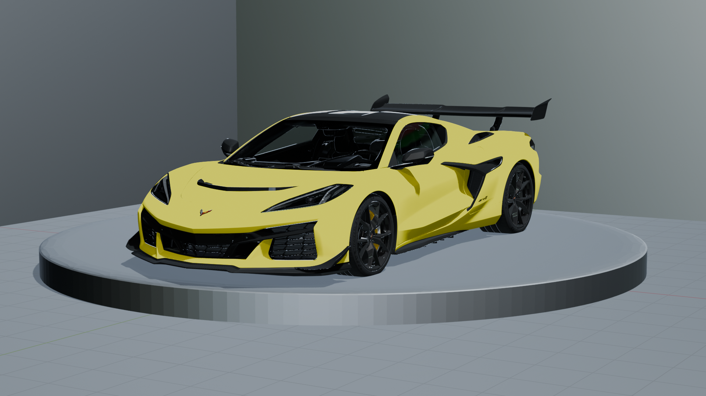

La Corvette C8 (2020) marque une révolution : pour la première fois, le moteur passe en position centrale. Chevrolet veut rivaliser avec Ferrari et McLaren tout en gardant un prix accessible. Le design et les performances changent totalement l’image de la Corvette. Elle devient une supercar américaine moderne.
Tester le véhicule| Voiture | Moteur | Puissance | 0–100km/h | Vitesse max |
|---|---|---|---|---|
| Chevrolet Corvette C8 | V8 LT2 6.2 L atmosphérique | 495 ch | 3,5 s | 296 km/h |